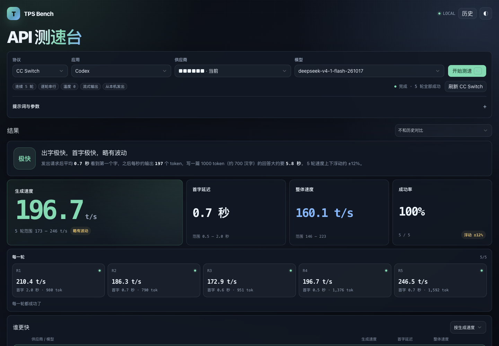

首字延迟
记录从发送请求到收到第一个 token 的时间，反映交互的即时响应感。
TPS Bench 是一个本地运行的 LLM API 测速工具。连续发起 5 轮流式请求，测量首字延迟（TTFT）、解码速度（decode TPS）和端到端吞吐（E2E TPS），让不同供应商与模型可以在同一套标准下直接对比。

不只记录一个总耗时，而是把首字延迟、生成速度和端到端吞吐拆开观察，定位真实体验的差异。
记录从发送请求到收到第一个 token 的时间，反映交互的即时响应感。
同时计算 decode TPS 和 E2E TPS，区分模型生成速度与整段请求的实际吞吐。
汇总 p50、p95、最小值、最大值与成功率，并支持把任意结果设为基线进行对比。
可以直接复用 CC Switch 的本地配置，也可以手动填写 Base URL 和 API Key。项目无需 npm install。
需要 Node.js 18 或更高版本。默认监听 127.0.0.1:8787，不会把服务暴露到公网。
$ git clone https://github.com/YHHD/tps-bench.git
$ cd tps-bench
$ npm start
→ http://127.0.0.1:8787/